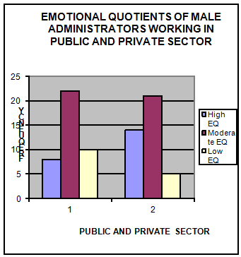

EMOTIONAL INTELLIGENCE OF MALE ADMINISTRATORS WORKING IN PUBLIC AND PRIVATE SECTOR
Abstract
The objectives of the study were to assess the emotional intelligence of male administrators of public and private sector and to compare them on the basis of their emotional quotient. Exploratory research design was adopted for conducting the present study. The total sample size was 80 male administer comprised of 40 males from public sector and 40 males from private sector. Uttar Pradesh has been selected purposively for the study. The data was collected by using purposive sampling. An Emotional intelligence test (Singh and Chadha-2001) was administered on the respondents. Data was analyzed by frequencies/ percentages, mean, standard deviation, Z-test and Chi-square test. The results revealed that there was a significant difference between the emotional intelligence of male administrators working in public and private sector. Administrators of the Private sector scored higher on EQ than those of the public sector.
Authors:
Mrs Manju Mahananda, Asst Prof.
Department of Human Development and Family Studies
Sam Higginbottom Institute of Agriculture, Technology &
Science, Allahabad
Shanta Badaik
Research Scholar
P.G. Department of Homescience
Ranchi University
Nalini Joshi, Student
Department of Human Development and Family Studies
Sam Higginbottom Institute of Agriculture, Technology &
Science, Allahabad
Swarima Mishra, Student
Department of Human Development and Family Studies
Sam Higginbottom Institute of Agriculture, Technology &
Science, Allahabad
Paper Transcript of Paper Titled :
EMOTIONAL INTELLIGENCE OF MALE ADMINISTRATORS WORKING IN PUBLIC AND PRIVATE SECTOR
Emotional Intelligence Of Male Administrators Working In Public And Private Sector
Mrs Manju Mahananda, Asst Prof.
Department of Human Development and Family Studies
Sam Higginbottom Institute of Agriculture, Technology & Science, Allahabad
Shanta Badaik
Research Scholar
P.G. Department of Homescience
Ranchi University
Nalini Joshi, Student
Department of Human Development and Family Studies
Sam Higginbottom Institute of Agriculture, Technology & Science, Allahabad
Swarima Mishra, Student
Department of Human Development and Family Studies
Sam Higginbottom Institute of Agriculture, Technology & Science, Allahabad
Abstract—The objectives of the study were to assess the emotional intelligence of male administrators of public and private sector and to compare them on the basis of their emotional quotient. Exploratory research design was adopted for conducting the present study. The total sample size was 80 male administer comprised of 40 males from public sector and 40 males from private sector. Uttar Pradesh has been selected purposively for the study. The data was collected by using purposive sampling. An Emotional intelligence test (Singh and Chadha-2001) was administered on the respondents. Data was analyzed by frequencies/ percentages, mean, standard deviation, Z-test and Chi-square test. The results revealed that there was a significant difference between the emotional intelligence of male administrators working in public and private sector. Administrators of the Private sector scored higher on EQ than those of the public sector.
Keywords- Emotional Intelligence; Male Administrator; Public Sector; Private Secto.
Introduction
"The problem is not with emotionality but with appropriateness of emotions and its expression"- Aristotle. Emotions originate from exposure to specific situations. The nature and the intensity of the emotion are usually related to cognitive activity in the form of the perception of the situation. Emotions are human beings warning systems that alert them to what is really going on around them. Intelligence can be generally explained as the process of gaining knowledge about the world through perception, memory, reasoning and thought. It is something, which needs cognition or brain to accomplish any task or action. The phrase "emotional intelligence" comprises of two words-“Intelligence" which is the faculty of thought and reason associated with the mind and -"Emotion" which is subjective and comes from the heart literally or figuratively. The concept "emotional intelligence” focuses on the feeling side of intelligence. It highlights that intelligence can be in our feelings, emotions and understanding. The concept of emotional intelligence has flourished mainly due to its value and importance in emotional management of individuals in general and work groups. Measurement of emotional intelligence is a key to understand one's temperament that makes people more effective.
Objectives of the Study
To study the level of emotional intelligence of male administrators working in public sector.
To study the level of emotional intelligence of male administrators working in private sector.
To compare the emotional intelligence parameters of male administrators both working in public and private sector.
Materials and Methods
An exploratory research design was adopted for the study and Uttar Pradesh has been selected purposively for research. The survey method was selected by using purposive sampling for the collection of data. The total sample size was 80 male administer comprised of 40 males from public sector and 40 males from private sector. Uttar Pradesh has been selected purposively for the study. The data was collected by using purposive sampling method. An Emotional intelligence test (Singh and Chadha-2001) was administered on the respondents. Data was analyzed by frequencies/ percentages, mean, and standard deviation, Z-test.
Results and Discussion
"The The results derived from the study entitled "Emotional intelligence of male administrators working in public and private sector" are analyzed statistically and the findings are portrayed under following sub-heads with tables and graphical figures and discussed in the following paragraphs:
Distribution of Administrators on the basis of their Emotional Quotient
This section defines the percentage distribution of respondents working in public and private sector regarding their emotional quotient.
Category (EQ) |
Male administrators |
|
|
Frequency |
Percentage |
Extremely high EQ |
- |
- |
High EQ |
8 |
20 |
Moderate EQ |
22 |
55 |
Low EQ |
10 |
25 |
Total |
40 |
|
Table 1: Percentage distribution of administrators working in public sector based on their emotional quotient
The Table 1 reveals that of 20 percent of public sector male administrators had high emotional quotient according to the scale.55 percent of administrators were in the category of moderate emotional quotient and 20 percent of administrators showed low emotional quotient. It reveals that administrators with moderate emotional intelligence had moderate level of emotional competency, emotional sensitivity and emotional maturity.
Category (EQ) |
Male administrators |
|
|
Frequency |
Percentage |
Extremely high EQ |
- |
- |
High EQ |
14 |
35 |
Moderate EQ |
21 |
52.5 |
Low EQ |
5 |
12.5 |
Total |
40 |
|
Table-2 Percentage distribution of administrators working in private sector based on their emotional quotient
The table 2 reveals that of 35 percent of public sector male administrators had high emotional quotient according to the scale.52.5 percent of administrators were in the category of moderate emotional quotient and 12.5 percent of administrators showed low emotional quotient. It reveals that administrators with high emotional intelligence had high emotional competency, emotional sensitivity and emotional maturity.
Category (EQ) |
Male administrators of public sector |
Male administrators of private sector |
||
|
Frequency |
Percentage |
Frequency |
Percentage |
Extremely high EQ |
- |
- |
- |
- |
High EQ |
8 |
20 |
14 |
35 |
Moderate EQ |
22 |
55 |
21 |
52.5 |
Low EQ |
10 |
25 |
5 |
12.5 |
Total |
40 |
|
40 |
|
Table-3 Comparison between emotional quotient of administrators working in public and private sector
The table 3 reveals that of 35 percent of private sector male administrators had high emotional quotient according to the scale compared to 20 percent of public sector male administrators. Whereas 55 percent administrators of public sector were in the category of moderate emotional quotient compared to 52.5 percent of administrators in private sector and 25 percent administrators of public sector showed low emotional quotient compared to 12.5 percent of private sector administers. It reveals that administrators with high emotional intelligence had high emotional competency, emotional sensitivity and emotional maturity.
The estimation derived from the table 3 also indicates that private sector administrators were highly emotional intelligent as compared to public sector administrators and it was due to the variation in work culture of both the sectors. Similar results were found by Singh (2004), according to him private sector administrators process information logically, rationally and systematically that is why they are more emotional intelligent than public sector administrators who have a more sympathetic and dominant nature due to the difference in working pattern of the organizations. Singh (2004) also found that EI is positively related with the organizational commitment.
 Figure -1 Emotional quotient of administrators working in public and private sector
Hypothesis: There were no significant differences in the mean scores of emotional intelligence between the males of public and private sectors.
Type of sample |
Sample size |
Mean |
Standard deviation |
Z-value (cal) |
Z-value (tab) |
Public sector |
40 |
222 |
24.72 |
2.48** |
1.96 |
Private sector |
40 |
235.75 |
24.26 |
Table -4 (**Significant= < 0.05) Difference between the emotional intelligence of male administrators working in public and private sectors
Table 4 indicates the difference in the mean scores and Z-calculated value (2.48) was greater than the Z-table value (1.96) at 5 percent probability level. Hence the hypothesis was rejected. The private sector administrators showed significantly higher emotional intelligence than public sector administrators due to variation in the work culture. As reported by Mal (2002) the relationship between emotional intelligence and decision making among 200 Indian managers in government organization and result revealed that there was a significant relation between emotional intelligence and decision-making.
Conclusion
It is concluded that, there is a significant difference between the emotional intelligence of administrators working in public and private sector. Private sector administers has higher EQ scores than those in the public sector.
References
Abraham. (1999). Emotional intelligence in organizations. A conceptualization. Generic Social and general psychology Monographs. 125 (2): pp-209-204.
Adeyemo, Qgunyemi (2002). Emotional intelligence and self efficacy as a predictor of occupational stress, Training and development Journal. 51 (10): pp-28-32.
Dwivedi A.S. (2002). Emotional intelligence at work, 2nd edition, sage publications, pp-158
Extremera (1999). Perfectionism and psychological distress, Journal of counseling psychology 53 (4): pp- 455-510.
Lucas P., Deery (2004). Maintream HR research and theory, International journal of Hospitality Management, 23 (5): pp- 459-472.
Mal, Mansi (2002), Relationship between emotional intelligence and decision making emotional intelligence at work, 2nd edition, sage publication, pp-161.
Singh shailendra (2004). Development of a measure of emotional intelligence,
Psychological studies, 49 (2-3): pp-136-141.
Sinha, Arvind K. and Jain, Ajay K.(2004) Emotional Intelligence imperative for the organizationally relevant outcomes, Psychological studies, 49 (2-3) : 81-96.